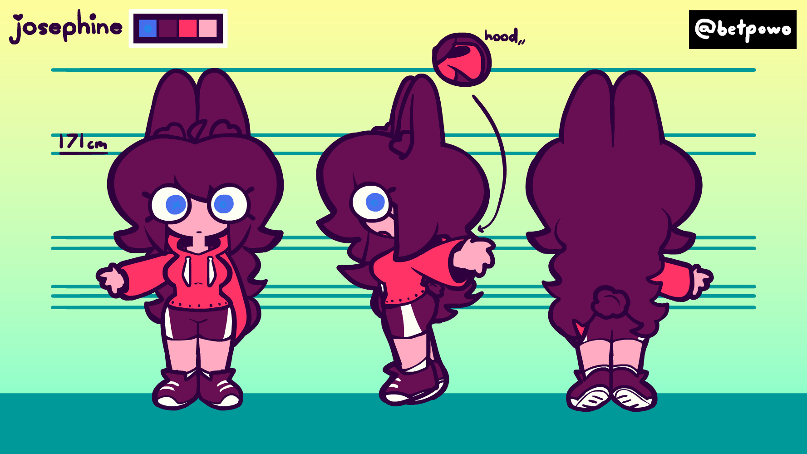
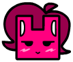

Josephine ~ love bunny
Image
Say hello to her.
Who the hell is this?
Josephine is a silly little woman out there with nothing to do with her life, other than talk to her friends. She ocassionally goes out and do stuff like the regular adult. She does not have a job right now.
Appearance
She has black fluffy hair, bright blue eyes with weird letters in them, and somewhat pink skin, but that may be because of my art style.
She wears a hot pink... uhh... hoodie??? It doesn't have any pockets though, so I don't know; and also black shorts (not black in the image due to my 'limited palette' rule) with one white stripe with shoes to match; kinda cute.
No, she's never gonna wear brown contacts.
Other Information
{
"nicknames": ["Josie", "Jojo"],
"age": 20,
"pronouns": ["she"],
"sexuality": "lesbian",
"favorites": ["chocolate (how... she's kinda a rabbit i thought chocolate was bad for them)", "love", "affection", "hot pink"]
}
The symbols in her eyes will light up when in an "overwhelmed" state, like being nervous or scared, not exactly when actually overwhelmed tho.
She runs a teeny tiny bit faster than the average human. She can also jump a bit higher. Don't blame me, blame Geometry Dash. 
She's a bit shy, and doesn't talk much; doesn't mean she doesn't like you though.
She got her eye symbols from ██████████████████████████████████████████████████████████████████ (will be explained in the future)